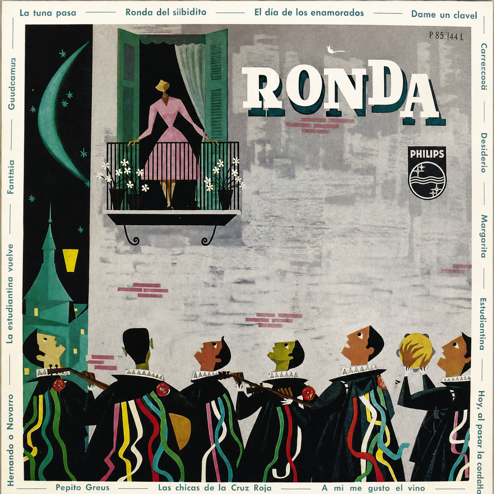
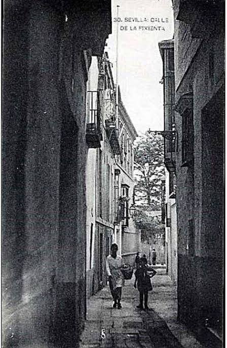
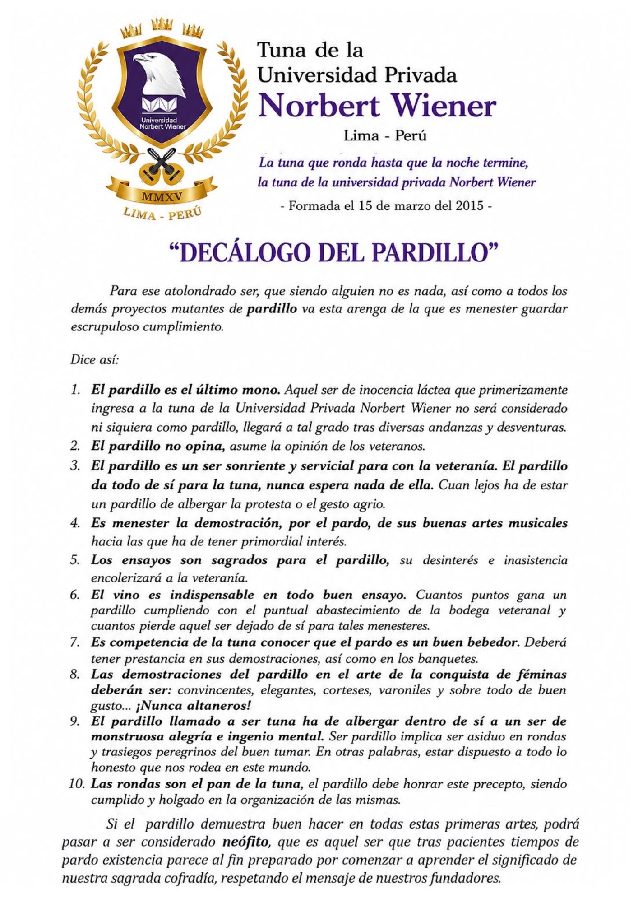

Gestor del Cancionero & Biblioteca de Acordes (Área Privada)
Diseña canciones, configura columnas, añade reseñas históricas y crea tu biblioteca masiva de acordes interactivos en SVG sin usar imágenes.
Vista Previa en Tiempo Real
🎸 Creador Masivo de Biblioteca de Acordes
Diseña tus acordes visualmente con el diapasón interactivo, ajusta el traste de inicio y genera todo el diccionario en un solo código JavaScript descargable.
Haz clic sobre las intersecciones para poner los dedos:
📚 Acordes guardados en esta sesión (0):
¡la tuna que ronda hasta que la noche termine!
Bienvenido al portal oficial de aprendizaje, tradición y archivo musical de la Tuna de la Universidad privada Norbert Wiener.
Cancionero
Aprende las letras y los acordes oficiales de nuestro repertorio.
Decálogo
Conoce e imprime el decálogo de la hermandad.
Real Orden de Ascenso
conoce un poco de nuestros tunos.
Minijuegos
Pon a prueba tus conocimientos sobre la Tuna jugando.
Cancionero & Transcripciones
Busca cualquier canción y despliega los acordes para guitarra, laúd o bandurria.
Clavelitos vals 3/4
La emblemática canción conocida popularmente como «Clavelitos» nació en 1949 bajo el título original de «Dame un clavel», con música compuesta por Genaro Monreal y letra de Federico Galindo, quien la escribió como un sincero gesto de amor para su entonces novia y posterior esposa. Su primera grabación en disco de vinilo tuvo lugar en 1958 a cargo de la Estudiantina de Madrid, figurando aún con su nombre original en la carátula.
En cuanto a su género y estructura, la obra fue concebida dentro del ámbito de las estudiantinas españolas con un carácter de vals / pasacalle. Está construida sobre un alegre compás de 3/4 que se percibe con un balance fluido y elegante («¡UN! - dos - tres»), lo que la convierte en un pasacalle ideal: un ritmo pensado para cantar mientras se camina por las calles y perfecto para ofrecer serenatas bajo los balcones.

Maitetxu mía zortziko 3/4
Maitetxu mía es uno de los temas más emblemáticos y emotivos del repertorio tradicional de la Tuna, compuesto originalmente como un zortzico en 1927 por el maestro granadino Francisco Alonso y letra del madrileño Emilio González del Castillo, quien la escribió inspirándose en las profundas e históricas vivencias de la emigración vasca hacia América.
La canción narra la melancólica historia de un emigrante vasco que parte a tierras lejanas para hacer fortuna, prometiendo regresar con su amada, pero al volver rico se encuentra con la trágica noticia de que ella ha muerto esperándolo.
Amalia pasodoble 2/4
la novia del pescador pasodoble 2/4
Mix criollos 2 vals criollo 3/4
Muñequita linda Bolero 4/4
Barrio brujo pasodoble 2/4
"Barrio Brujo" es un pasodoble clásico de la Tuna de Peritos Industriales de Sevilla. Toda su letra describe lugares reales del Barrio de Santa Cruz y se basa en hechos históricos confirmados.
Cuando dice que en verano “en ninguna de ellas penetra el sol”, se refiere a la antigua Judería de Sevilla. En la Edad Media, sus calles se diseñaron estrechas, altas y laberínticas a propósito. Era un sistema de ventilación natural para generar sombra y corrientes de aire durante el caluroso verano andaluz.
El estribillo habla de la Plaza de Doña Elvira, nombrada así por una noble del siglo XIV. En este solar funcionó desde 1577 un Corral de Comedias donde se presentaron obras de Miguel de Cervantes. Además, el escritor José Zorrilla se basó en esta plaza para situar la casa de Doña Inés en su famosa obra Don Juan Tenorio.
La canción también menciona las calles Santa Teresa, Lope de Rueda y Los Venerables, que forman el corazón religioso del barrio. En Los Venerables destaca su hospital barroco de 1675 para sacerdotes ancianos. A unos metros, en la calle Santa Teresa, está el convento fundado por Santa Teresa de Jesús en 1575, donde aún se guarda el manuscrito original de su libro Las Moradas.
La última parte de la letra detalla el pasado comercial de la ciudad. El Callejón del Agua va pegado a la muralla y escondía los tubos que llevaban agua a los palacios del Real Alcázar. La Calle Pimienta debe su nombre a la época en que Sevilla controlaba el comercio con América y las especias valían más que el oro. El paseo termina en los Jardines de Murillo, que eran huertos del rey hasta que Alfonso XIII los cedió a Sevilla en 1911. El arquitecto Juan Talavera tiró las casas viejas para abrir el barrio y darle el diseño peatonal con fuentes y azulejos que hoy describe la canción.

Elsa vals 3/4
Callejón de un solo caño vals criollo 3/4
Isa de Luciano Isa 3/4
La morena de mi copla pasodoble 2/4
Locura mia Bolero 4/4
Morenita verde luna pasodoble 2/4
Ronda del rabal pasodoble 2/4
Sortilegio Bolero 4/4
Tuna compostelana pasodoble 2/4
la copla del rondador pasodoble 2/4
Rondalla vals 3/4
Decálogo de la Tuna
Visualiza el documento oficial o descárgalo en alta resolución.


Real Orden de Ascenso (ROA)
Jerarquía e historial de los Tunos de Beca de nuestra hermandad.
Minijuegos Tradicionales
¿Qué tanto sabes de la Tuna? Ponte a prueba.